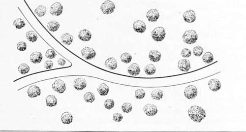

On Wood And Plantations. Part 3
Description
This section is from the book "Landscape Gardening", by Andrew Jackson Downing. Also available from Amazon: Landscape Gardening.
On Wood And Plantations. Part 3
As uniformity, and grandeur of single effects, were the aim of the old style of arrangement, so variety and harmony of the whole are the results for which we labor in the modern landscape. And as the avenue, or the straight line, is the leading form in the geometric arrangement of plantations, so let us enforce it upon our readers, the group is equally the key-note of the modern style. The smallest place, having only three trees, may have these pleasingly connected in a group; and the largest and finest park — the Blenheim or Chatsworth, of seven miles square, is only composed of a succession of groups, becoming masses, thickets, woods. If a demesne with the most beautiful surface and views has been for some time stiffly and awkwardly planted, it is exceedingly difficult to give it a natural and agreeable air; while many a tame level, with scarcely a glimpse of distance, has been rendered lovely by its charming groups of trees. How necessary, therefore, is it, in the very outset, that the novice, before he begins to plant, should know how to arrange a tasteful group!
Nothing, at first thought, would appear easier than to arrange a few trees in the form of a natural and beautiful group, — and nothing really is easier to the practised hand. Yet experience has taught us that the generality of persons, in commencing their first essays in ornamental planting", almost invariably crowd their trees into a close, regular clump, which has a most formal and unsightly appearance, as different as possible from the easy, flowing outline of the group.
"Natural groups are full of openings and hollows, of trees advancing before, or retiring behind each other; all productive of intricacy, of variety, of deep shadows and brilliant lights".
The chief care, then, which is necessary in the formation of groups, is, not to place them in any regular or artificial manner, — as one at each corner of a triangle, square, octagon, or other many-sided figure; but so to dispose them, as that the whole may exhibit the variety, connection, and intricacy seen in nature. " The greatest beauty of a group of trees," says Loudon, "as far as respects their stems, is in the varied direction these take as they grow into trees; but as that is, for all practical purposes, beyond the influence of art, all we can do, is to vary as much as possible the ground plan of groups, or the relative positions which the stems have to each other where they spring from the earth. This is considerable, even where a very few trees are used, of which any person may convince himself by placing a few dots on paper.
In the composition of larger masses, similar rules must be observed as in the smaller groups, in order to prevent them from growing up in heavy, clumpish forms. The outline must be flowing, here projecting out into the grass, there receding back into the plantation, in order to take off all appearance of stiffness and regularity. Trees of medium and smaller size should be so interspersed with those of larger growth, as to break up all formal sweeps in the line produced by the tops of their summits, and occasionally, low trees should be planted on the outer edge of the mass, to connect it with the humble verdure of the surrounding sward.
In many parts of the union,* where new residences are being formed, or where old ones are to be improved, the grounds will often be found, partially, or to a considerable extent, clothed with belts or masses of wood, either previously planted, or preserved from the woodman's axe. How easily we may turn these to advantage in the natural style of Landscape Gardening; and by judicious trimming when too thick, or additions when too much scattered, elicit often the happiest effects, in a magical manner!
* It is an interesting side-light on polities and history that we have ceased altogether, in these times of world politics, to speak of "the Union," meaning the United States. This was once the most natural and popular phrase. — F. A. W.
Where there are large masses of wood to regulate and arrange, much skill, taste, and judgment are requisite to enable the proprietors to preserve only what is really beautiful and picturesque, and to remove all that is superfluous. Most of our native woods, too, have grown so closely, and the trees are consequently so much drawn up, that should the improver thin out any portion, at once, to single trees, he will be greatly disappointed if he expects them to stand long; for the first severe autumnal gale will almost certainly prostrate them. The only method, therefore, is to allow them to remain in groups of considerable size at first, and to thin them out as is finally desired, when they have made stronger roots and become more inured to the influence of the sun and air.
But to return to grouping; what we have already endeavored to render familiar to the reader, may be called grouping in its simple meaning — for general effect, and with an eye only to the natural beauty of pleasing forms. Let us now explain, as concisely as we may, the mode of grouping in the two schools of Landscape Gardening heretofore defined, that is to say, grouping and planting for Beautiful effect, and for Picturesque effect; as we wish it understood that these two different expressions, in artificial landscape, are always to a certain extent under our control.
Planting And Grouping To Produce The Beautiful
The elementary features of this expression our readers will remember to be fulness and softness of outline, and perfectly luxuriant development. To insure these in plantations, we must commence by choosing mainly trees of graceful habit and flowing outlines; and of this class of trees, hereafter more fully illustrated, the American elm and the maple may be taken as the type. Next, in disposing them, they must usually be planted rather distant in the groups, and often singly. We do not mean by this, that close groups may not occasionally be formed, but there should be a predominance of trees grouped at such a distance from each other as to allow a full development of the branches on every side. Or, when a close group is planted, the trees composing it should be usually of the same or a similar kind, in order that they may grow up together and form one finely rounded head. Rich creepers and blossoming vines, that grow in fine luxuriant wreaths and masses, arc lit accompaniments to occasional groups in this manner. Fig. 9 represents a plan of trees grouped along a road or walk, so as to develop the Beautiful.*
Fig. 9. Trees Grouped to Produce the Beautiful.
Continue to: